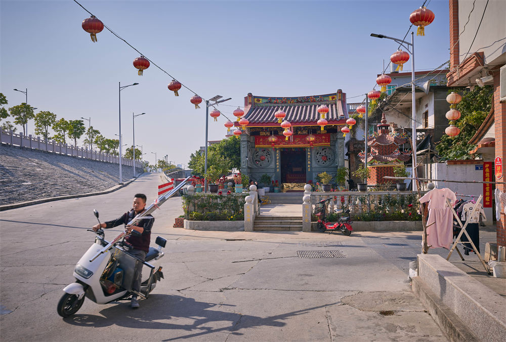

From the late 15th to the 16th century, as European fleets searched for new routes and partners, Ming China was not entirely absent from this global surge of seaborne trade. In Western records, Zhangzhou—“Chincheo”—stood alongside Ningbo (“Liampo,” referring to Shuangyu) as a key hub of international private maritime commerce.

This reported feature follows how Yuegang—an unassuming harbor in today’s Zhangzhou—briefly moved into the center of a global maritime moment. By tracking one coastal node from Wuyu to Moon Harbor, the story reads “sea ban vs. opening” not as an abstract policy debate, but as a chain of lived pressures: smuggling, local compromise, military crackdowns, and the eventual legalization of private trade.
Excerpt 1: Wuyu, Kinmen—and a forgotten frontline of the Age of Sail
Today, Wuyu is hardly a famous name.
To reach the island, you first arrive at Doumei village in Longhai, Zhangzhou. By the dock, a warm-hearted seafood-shop owner invites us to sit with a fresh cup of Tieguanyin. He checks his watch and explains that boats leave on the hour; it takes fifteen minutes to land. From the pier, you can see the island’s coastline traced by tightly packed houses—Wuyu still holds six to seven thousand residents, most living by fishing. Water and electricity are expensive, he adds, because fresh water has to be transported from the mainland. “On a clear day, you can see Kinmen from here.”
He runs outside to prove it—staring into the distance, pointing to a faint shape behind Wuyu, like a mirage. The geography naturally calls up cross-strait history. But in the time-space of this story, what matters is a different connection: a clash between the Ming state and Portuguese traders. Locals even prefer an older name, “Yiyu,” because the island was once seen as a foreign nest.
Excerpt 2: Sea ban, smuggling, and Zhu Wan’s pursuit from Shuangyu to Wuyu
Under the Ming policy that “not a single plank may enter the sea,” private maritime trade still grew—driven by profit and necessity—and the conflict between local life and imperial control was sharpest along the Fujian–Zhejiang coast.
As the Age of Sail reordered oceanic worlds, Portuguese traders—failing to secure legal commerce—turned to smuggling along China’s southeast. In 1548, after a military victory over the smuggling port of Shuangyu, the imperial commander Zhu Wan ordered the main force back to Fujian. The Portuguese, pushed out of Ningbo and unable to return to Malacca due to storms, regrouped on the Fujian coast with Chinese and foreign private merchants, seizing Wuyu as a new base. The battles later known as Wuyu and Zoumaxi were, in effect, continuations of Shuangyu—a pursuit campaign that brought Zhu Wan’s crackdown into direct collision with a coastal trading society.
Excerpt 3: Blockade, collapse—and the battle at Zoumaxi
By late 1548, the Ming commander Lu Tang attempted to cut Wuyu off from the outside world—intercepting supply boats and tightening a maritime blockade.
Direct assault was difficult. The Portuguese refused to meet the Ming fleet at sea, leaving the attack ineffective; blockade became the only option. After three months, in early 1549, short of provisions, the Portuguese and their allies abandoned Wuyu. Some rode the northeast monsoon back to Malacca, but others stayed in Fujian waters, unwilling to leave without collecting payments. In February, a group returned toward Zhangzhou and anchored near Zoumaxi. They were discovered. On February 20, armed conflict erupted; the Portuguese were nearly annihilated. In the adventurer Pinto’s recollection, the encounter was catastrophic—ships seized, hundreds killed. Forced away from the Fujian coast, the Portuguese drifted back toward Guangdong. Only later would Macau emerge as their foothold, and a new East Asian trade system take shape.
Excerpt 4: Victory, impeachment, and the political cost of enforcing the ban
Zhu Wan appeared to have won. But his hardline enforcement cut directly against the interests of coastal elites and residents whose lives were tied to the sea—triggering backlash across the social ladder.
He was impeached, especially by officials from Fujian and Zhejiang. One key charge was that he executed captives first and reported later: Portuguese prisoners as well as ninety-six Chinese men led by a merchant figure known as Li Guangtou. The censors argued that those killed were not necessarily “foreign pirates,” and that bearing Chinese names did not prove rebellion. Zhu Wan, Lu Tang, and others were prosecuted; Zhu Wan ultimately took poison in prison. The history entered the official record with a grim clarity: “Even if the Son of Heaven does not wish me dead, the men of Fujian and Zhejiang will kill me… I will decide my own death.”
Excerpt 5: Legal opening at Yuegang—and a port that fed the Zheng maritime empire
In 1567, Yuegang was formally opened as a legal port for private overseas trade—allowing merchants to sail to the “Eastern and Western Oceans,” while forbidding voyages to Japan.
The “Longqing opening” was a major turn after two centuries of restriction. On the ground, it was also pragmatic: local officials believed bans could not be enforced and that legalization at least allowed taxation. Yet the state’s grasp remained partial. As historian Wang Rigen notes, Fujian’s jagged coastline offered countless small harbors; coastal defense was point-based, leaving gaps; officials were easily corrupted; and merchants played hide-and-seek—shifting ports whenever policy tightened. Yuegang became the only officially recognized private-trade port, but that did not mean comprehensive control over private maritime commerce.
In late Ming, Yuegang linked to more than forty Southeast Asian polities, and its traffic surged. From this loosened environment, the Zheng group rose. Zheng Zhilong—“Zheng Yi”—absorbed commercial power from predecessors, expanded fleets, levied “taxes” on foreign ships, and effectively shared dominance of the seas with the Dutch East India Company. A hand-painted nautical chart later known as the Selden Map—rediscovered in Oxford centuries later—mapped routes from Quanzhou across the Eastern and Western Oceans. Scholars link its network to the very maritime empire Zheng Zhilong controlled. Standing at Zhenhaijiao, facing the Taiwan Strait, the story folds back into a larger loop: from Cape Roca, where Portugal’s voyages began, to Zhangzhou, where those voyages finally arrived.